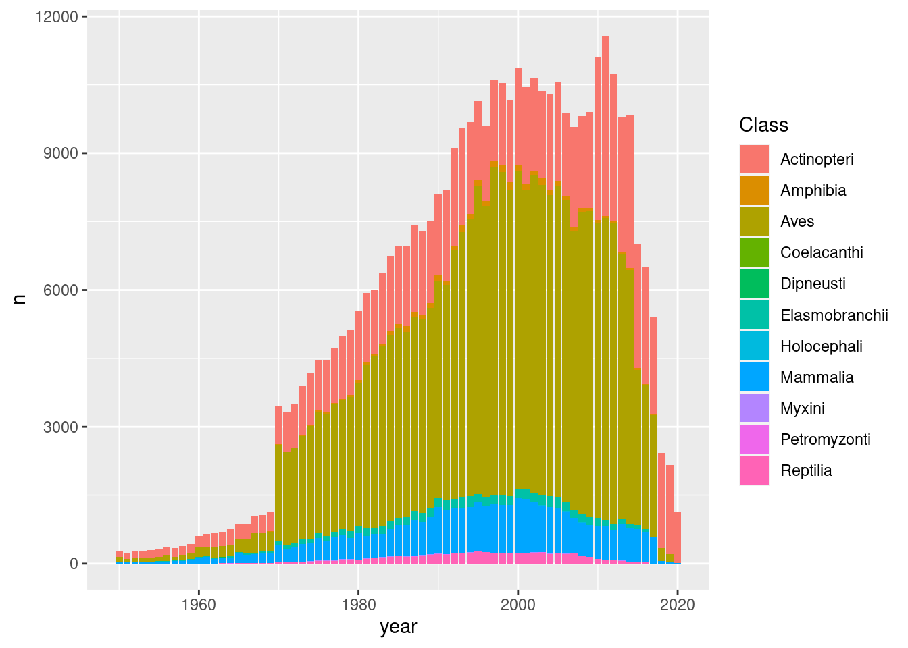
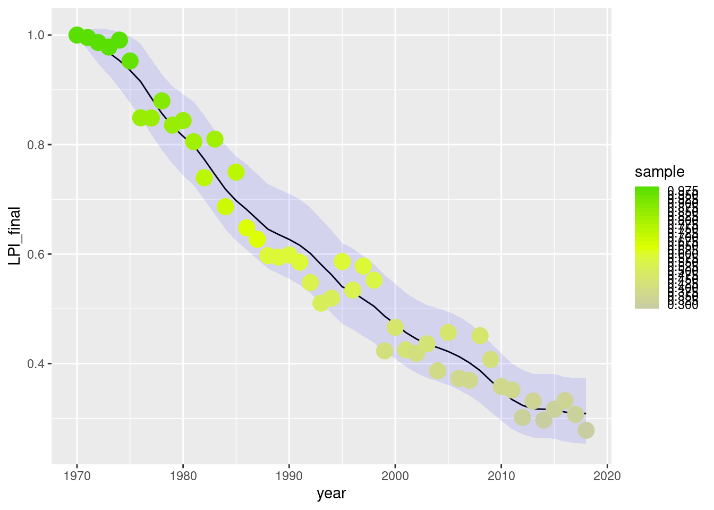
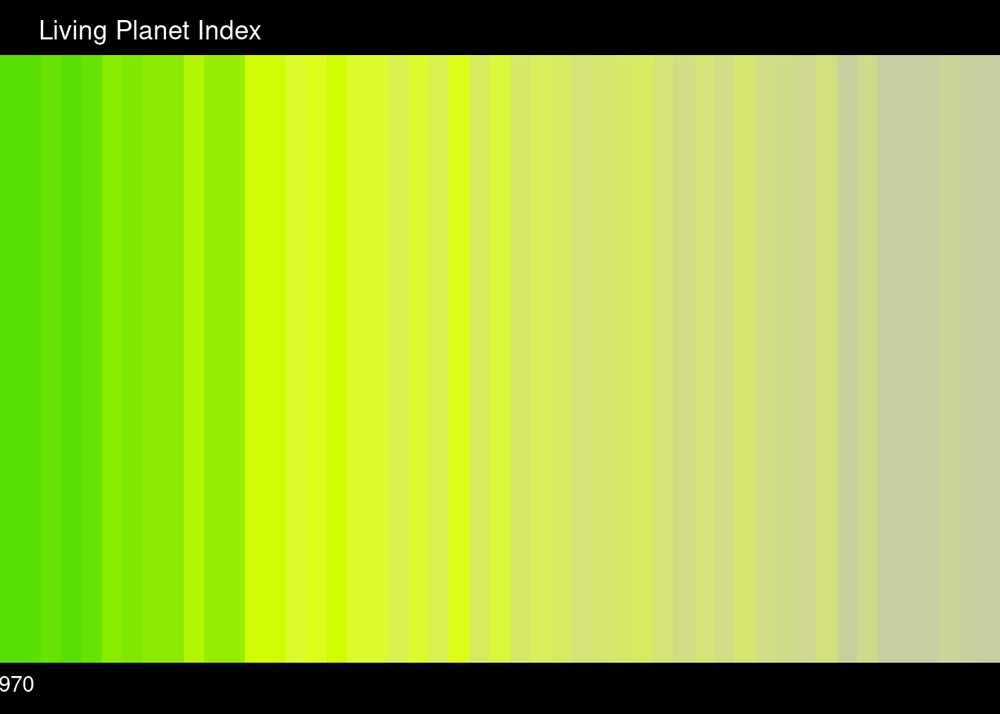

library(tidyverse)
library(scales)LPD data
Fill out form to download from https://www.livingplanetindex.org/data_portal . Link below will expire after some time.
Starting with the underlying living planet database, a collection of ‘abundance’ metrics from various studies across various taxa:
# Goodness people with the zip, csv.gz is a streamable format for the COMPRESS algo...
#download.file("https://www.livingplanetindex.org/session/542bd1f690c385d08a5eceec1dfc09b6/download/download_alldata?w=", "lpd.zip")
#archive::archive_extract("lpd.zip")
#lpd <- read_csv("LivingPlanetIndex_2022_PublicData/LPD2022_public.csv")
#write_csv(lpd, "data/lpd.csv.gz")# using cached version from above...
lpd <- read_csv("data/lpd.csv.gz") |>
pivot_longer(matches("\\d{4}"), names_to="year", values_to = "abundance_metric") |>
mutate(abundance_metric = as.numeric(abundance_metric),
year = as.numeric(year)) |>
filter(!is.na(abundance_metric)) |>
distinct()
# counts are not really abundances but oh well...
lpd |> count(Method, sort=TRUE)# A tibble: 3,664 × 2
Method n
<chr> <int>
1 Shorebird count area survey 69910
2 Volunteer survey of set routes during peak breeding season 52419
3 Road count - breeding birds 24796
4 Gill net 20268
5 Trawl data from demersal (groundfish) research trawl surveys. Only dat… 13107
6 Unknown 11318
7 Large-scale monitoring with standardised methods 5793
8 Annual road count - breeding birds 4053
9 SPA 4021
10 count of individuals 3932
# … with 3,654 more rows# biodiversity data is usually mostly bird data
lpd |> count(year,Class) |>
ggplot(aes(year, n)) + geom_col(aes(fill=Class))
# some 4016 distinct citations, though not all entirely distinct
lpd |> count(Citation, sort=TRUE)# A tibble: 4,014 × 2
Citation n
<chr> <int>
1 "Environment Canada (2015). \"North American Breeding Bird Survey - Ca… 67316
2 "Threatened Species Index data portal: BLA (2020). Shorebirds 2020. Bi… 47735
3 "Threatened Species Index data portal: QWSG (2020). Queensland Wader S… 22372
4 "ESBR; Naturae Consultoria Ambiental (2020) 1º RELATÓRIO ANUAL - Licen… 20268
5 "Environment Canada (2014). \"North American Breeding Bird Survey - Ca… 13058
6 "Brown, S. K., R. Mahon, K. C. T. Zwanenburg, K. R. Ruja, L. W. Clafli… 12402
7 "RAM Legacy Stock Assessment Database (2021) ‘RAM Legacy Stock Assessm… 9408
8 "EBCC/BirdLife/RSPB/CSO (2021) Trends of common birds in Europe, 2021 … 5807
9 "Myers, R. Ransom Myers' Stock Recruitment Database." 5236
10 "RAM Legacy RAM Legacy Stock Assessment Data Base version 3.0." 4806
# … with 4,004 more rowsObviously plenty to unpack here, though perhaps most relevant would be a deeper dive into the various citations to get a better sense of how these populations are chosen (i.e. few papers are published which describe a population abundance that is simply steady over the length of the survey, though some explicitly monitoring-based surveys do. The collection is a mix of academic journal sources and some more explicit assessments.)
Just for fun, we can grab the index data and re-create the biodiversity stripes. The rpli package documentation + code includes more information on how the index is calculated. The choice of the geometric mean used in the definition, among other assumptions, is probably far less than ideal…
# Index alone
# Download from <https://www.livingplanetindex.org/latest_results>
# download.file("https://www.livingplanetindex.org/session/2b05d50635fc20f864a9b0898b27da36/download/downloadData?w=", "data/lpi.csv")
lpi <- read_csv("data/lpi.csv")
set.seed(1234)
lpi |>
rename(year = Year) |>
mutate(sample = LPI_final + ((CI_high - CI_low)/2) * (runif(n(), -10,10))/10 ) |>
ggplot(aes(year, LPI_final)) + geom_line() + geom_ribbon(aes(ymin=CI_low, ymax=CI_high), fill="blue", alpha=0.1) +
geom_point(aes(year, sample, col=sample), size=5) +
scale_color_stepsn(colors = c(low="#c7cca5", mid="#ddff03", high="#53de02"),
values = rescale(c(min(lpi$LPI_final), 0.65, max(lpi$LPI_final))),
n.breaks = 30)
# color bars are based on random draws from distribution
lpi |>
rename(year = Year) |>
mutate(sample = LPI_final + ((CI_high - CI_low)/2) * (runif(n(), -10,10))/10 ) |>
drop_na() |>
ggplot(aes(x = year, y = 1, fill = sample)) +
geom_tile(show.legend = FALSE) +
#scale_fill_steps2(low = "#c7cca5", mid="#ddff03", high="#53de02", midpoint = median(lpi_df$LPI_final)) +
scale_fill_stepsn(colors = c(low="#c7cca5", mid="#ddff03", high="#53de02"), values = rescale(c(min(lpi$LPI_final), .7, max(lpi$LPI_final))),
n.breaks = 30) +
coord_cartesian(expand=FALSE) +
scale_x_continuous(breaks=seq(1970, 2020, 49)) +
labs(title= "Living Planet Index") +
theme_void() +
theme(
axis.text.x = element_text(color="white",
margin =margin(t=5, b=10, unit="pt")),
plot.title = element_text(color="white",
margin =margin(b=5, t=10, unit="pt"),
hjust= 0.05),
plot.background = element_rect(fill="black")
)